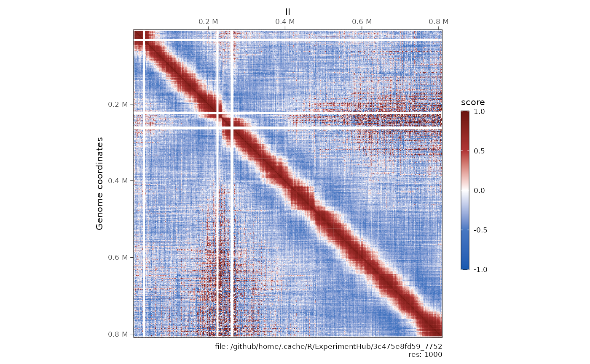
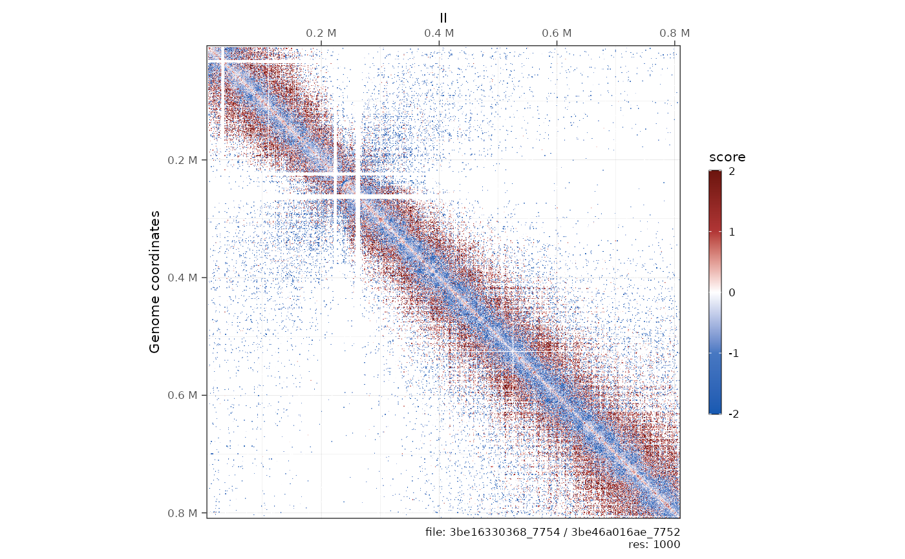

Different operations can be performed:
Detrending a contact matrix, i.e. removing the distance-dependent contact trend;
Autocorrelate a contact matrix: this is is typically done to highlight large-scale compartments;
Divide one contact matrix by another;
Merge multiple contact matrices;
Serpentinify, or smooth a contact matrix out. This requires serpentine
python package to be installed.
detrend(x, use.scores = "balanced")
autocorrelate(x, use.scores = "balanced", ignore_ndiags = 3)
divide(x, by, use.scores = "balanced")
merge(..., use.scores = "balanced")
serpentinify(
x,
use.scores = "balanced",
use_serpentine_trend = TRUE,
serpentine_niter = 10L,
serpentine_ncores = 16L
)a contacts object
use.scores
ignore N diagonals when calculating correlations
a contacts object
contacts objects
whether to use the trend estimated with
serpentine (this requires reticulate and the python package serpentine)
number of iterations to use for serpentine
number of CPUs to use for serpentine
a contacts object with two additional scoress: expected and
detrended
a contacts object with a single autocorrelation scores
a contacts object with a single ratio scores
a contacts object. Each returned scores is the sum of the
corresponding scores from input contacts.
a contacts object with a single smoothen scores
#### -----
#### Detrending a contact matrix
#### -----
library(HiContacts)
contacts_yeast <- contacts_yeast()
#> snapshotDate(): 2022-08-23
#> see ?HiContactsData and browseVignettes('HiContactsData') for documentation
#> loading from cache
contacts_yeast <- detrend(contacts_yeast)
scores(contacts_yeast)
#> List of length 4
#> names(4): raw balanced expected detrended
#### -----
#### Auto-correlate a contact matrix
#### -----
contacts_yeast <- autocorrelate(contacts_yeast)
#> Warning: The `x` argument of `as_tibble.matrix()` must have unique column names if `.name_repair` is omitted as of tibble 2.0.0.
#> Using compatibility `.name_repair`.
scores(contacts_yeast)
#> List of length 1
#> names(1): autocorrelation
plotMatrix(contacts_yeast, scale = 'linear', limits = c(-1, 1), cmap = bwrColors())

#### -----
#### Divide 2 contact matrices
#### -----
contacts_yeast <- contacts_yeast()
#> snapshotDate(): 2022-08-23
#> see ?HiContactsData and browseVignettes('HiContactsData') for documentation
#> loading from cache
contacts_yeast_eco1 <- contacts_yeast_eco1()
#> snapshotDate(): 2022-08-23
#> see ?HiContactsData and browseVignettes('HiContactsData') for documentation
#> loading from cache
div_contacts <- divide(contacts_yeast_eco1, by = contacts_yeast)
div_contacts
#> `contacts` object with 146,082 interactions over 802 regions
#> -------
#> fileName: "36a3e190e51_7754 / 36a177ee0f8_7752"
#> focus: "II"
#> resolutions(1): 1000
#> current resolution: 1000
#> interactions: 146082
#> scores(1): ratio
#> topologicalFeatures: ()
#> pairsFile: N/A
#> metadata(0):
plotMatrix(div_contacts, scale = 'log2', limits = c(-2, 2), cmap = bwrColors())

#### -----
#### Merge 2 contact matrices
#### -----
merged_contacts <- merge(contacts_yeast_eco1, contacts_yeast)
merged_contacts
#> `contacts` object with 158,048 interactions over 802 regions
#> -------
#> fileName: ""
#> focus: "II, II"
#> resolutions(5): 1000 2000 4000 8000 16000
#> current resolution: 1000
#> interactions: 158048
#> scores(2): raw balanced
#> topologicalFeatures: ()
#> pairsFile: N/A
#> metadata(2): merging operation